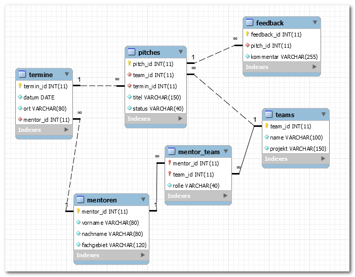
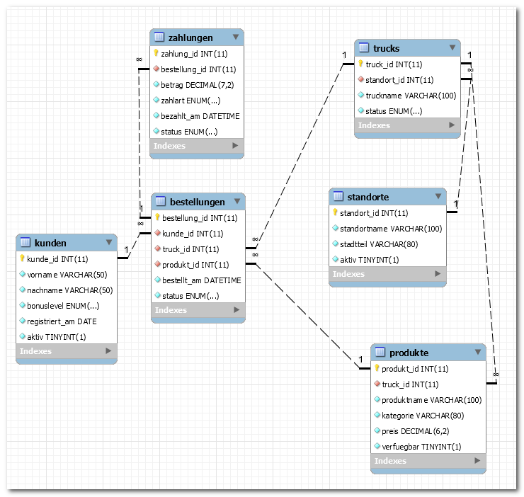

titel: "Klassenarbeit BG12 2025/2026: EERM und SQL (60 Min) – VERSION3 Lösung" klasse: "BG12" schuljahr: "2025-2026" fach: "Informatik und Wirtschaftsinformatik" bearbeitungszeit: "60 Minuten" erreichbare_punkte: 34 verteilung: modellierung_normalisierung_anomalien: 14 abfragen_mehrtabellen: 14 theorie_mc: 3 struktogramm: 3 artefakte: modellierung_eerm_lehrkraft: "startupwerkstatt_2025.mwb" sql_db_dump: "foodtrucknetz_struktur_2025.sql" sql_db_daten: "foodtrucknetz_daten_2025.sql" sql_db_eerm: "foodtrucknetz_2025.mwb" sql_db_eerm_grafik: "foodtrucknetz_2025.png" fassung: loesung
Klasse/Kurs: BG12 | Schuljahr: 2025/2026 | Bearbeitungszeit: 60 Minuten | Erreichbare Punkte: 34
Hinweis: Diese Fassung enthält Musterlösungen und Bewertungshinweise.
| Teil | Inhalte | Punkte | Zeit |
|---|---|---|---|
| A | Theorie (MC) | 3 | 5 Min |
| B | EERM, Normalisierung, Anomalien | 14 | 25 Min |
| C | SQL-Abfragen über mehrere Tabellen | 14 | 25 Min |
| D | Grundlagen Programmierung (Struktogramm) | 3 | 5 Min |
| Gesamt | 34 | 60 Min |
Musterlösung: r, f, r, r, r, f
Bewertung (8 Punkte): - Entitätstypen korrekt identifiziert: 2 Pkt - Beziehungen korrekt (inkl. N:M-Auflösung): 3 Pkt - Kardinalitäten korrekt angegeben: 1 Pkt - Attributzuweisung, PK/FK korrekt: 2 Pkt
Referenzmodell: startupwerkstatt_2025.mwb

Musterlösung (Beispiel):
- termin_id -> mentor_id
- pitch_id -> team_id, termin_id
- 3NF erfüllt, da keine transitiven Abhängigkeiten zwischen Nichtschlüsselattributen bestehen.
Musterlösung: - Einfügeanomalie: Mentorprofil erst möglich, wenn ein Termin erfasst wurde. - Änderungsanomalie: Raumname an mehreren Stellen zu ändern. - Löschanomalie: Letzter Termin gelöscht, Mentorzuordnung geht verloren.
Separater SQL-Kontext (3NF, Kontext 2) – anderen Kontext als Modellierung: Für Teil C wird absichtlich ein anderen Kontext verwendet als in Teil B (Kontext 1), damit die Modellierungslösung aus Teil B nicht indirekt vorgegeben wird.
Arbeitsgrundlage:
- SQL-Struktur: foodtrucknetz_struktur_2025.sql
- SQL-Daten: foodtrucknetz_daten_2025.sql
- EERM-Referenzgrafik: foodtrucknetz_2025.png

SELECT
k.nachname,
k.vorname,
t.truckname,
s.standortname,
z.betrag
FROM bestellungen b
JOIN kunden k ON b.kunde_id = k.kunde_id
JOIN trucks t ON b.truck_id = t.truck_id
JOIN standorte s ON t.standort_id = s.standort_id
JOIN zahlungen z ON b.bestellung_id = z.bestellung_id
WHERE b.status = 'abgeschlossen'
ORDER BY k.nachname, b.bestellt_am;
SELECT k.nachname, k.vorname, COUNT(b.bestellung_id) AS anzahl_bestellungen
FROM kunden k
JOIN bestellungen b ON k.kunde_id = b.kunde_id
WHERE b.status = 'abgeschlossen'
GROUP BY k.kunde_id, k.nachname, k.vorname
HAVING COUNT(b.bestellung_id) >= 2
ORDER BY anzahl_bestellungen DESC;
SELECT
s.standortname,
MAX(b.bestellt_am) AS letzter_zeitpunkt,
COUNT(DISTINCT b.kunde_id) AS unterschiedliche_kunden
FROM standorte s
JOIN trucks t ON s.standort_id = t.standort_id
JOIN bestellungen b ON t.truck_id = b.truck_id
GROUP BY s.standort_id, s.standortname;
SELECT p.produkt_id, p.produktname, p.kategorie
FROM produkte p
LEFT JOIN bestellungen b ON p.produkt_id = b.produkt_id
WHERE b.bestellung_id IS NULL;
Ein Foodtruck-Betreiber möchte seinen Tagesumsatz berechnen. Erstellen Sie ein Struktogramm (gemäß Operatorenliste für Struktogramme) für folgende Verarbeitung:
Hinweis: Verwenden Sie ausschließlich Sequenz-Blöcke (EVA-Prinzip). Kontrollstrukturen (Schleifen, Verzweigungen) werden nicht bewertet und sind nicht erforderlich.
| Bewertungskriterium | Punkte |
|---|---|
| Struktogramm-Rahmen (ANFANG/ENDE) und 3 Sequenzblöcke vollständig | 1,0 |
| Berechnungsformel korrekt (Zuweisung mit :=) | 1,5 |
| Variablennamen und Lesbarkeit | 0,5 |
| Gesamt | 3,0 |
Musterlösung (Text-Notation gemäß Operatorenliste):
ANFANG
EINGABE: anzahl
EINGABE: preis
tagesumsatz := anzahl * preis
AUSGABE: tagesumsatz
ENDE
Struktogramm (BW-Standard, generiert):
Bewertungshinweise:
- 1,0 Pkt: ANFANG/ENDE vorhanden, 4 Sequenzblöcke sauber abgegrenzt (je 0,25 Pkt)
- 1,5 Pkt: Zuweisung tagesumsatz := anzahl * preis korrekt (Operator := und Formel je 0,75 Pkt)
- 0,5 Pkt: Variablennamen aussagekräftig und einheitlich